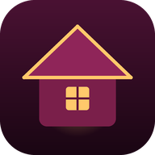

Temperatura
Wilgotność
Wilgotność
Licznik gazu
Bieżący odczyt
212.668 m³
2026-11-23 04:26:27
Ostatnia aktualizacja: 2026-11-23 04:26:27
✓ Ostatni odczyt się udał.
Zużycie gazu w ostatnich 24 h7.729 m³
Aktualne zdjęcie z gazomierza


temperatura w Twoim domu